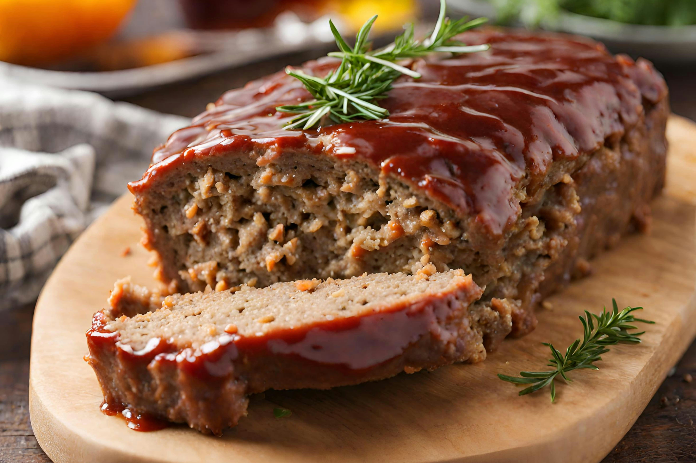

Meatloaf

Description:
This traditional meatloaf recipe made with sautéed vegetables, spices, and bread crumbs is moist and flavorful and topped with an old-fashioned glaze. Cook time will depend on the size and shape of your loaf, as well as the type of baking pan you use. Serve this hearty meal on cool fall or winter evenings with mashed potatoes and a simple mushroom gravy.
Ingredients
- cooking spray
- 1 ½ large zucchinis, thinly sliced lengthwise
- 21 tablespoon olive oil
- 1 pound ground beef
- 1 ½ cups low-carb marinara sauce
- 2 teaspoons salt, divided
- 2 tablespoons ginger paste
- 2 tablespoons melted butter
- 1 ½ teaspoons garam masala
- salt to taste
Steps
- Preheat the oven to 375 degrees F (190 degrees C). Grease an 8-inch square baking dish with cooking spray.
- Pat dry zucchini slices with a paper towel to remove excess moisture. Set aside.
- Preheat the oven to 400 degrees F (200 degrees C).
- Place chicken on skewers; arrange in a 9x13-inch baking dish.
- Bake in the preheated oven until almost cooked through, about 20 minutes.
- Make sauce: Melt butter in a medium saucepan over medium heat. Stir in garam masala. When masala begins to crackle, mix in ginger paste, garlic, and green chile pepper. Sauté until tender, 2 to 3 minutes; stir in tomato purée, water, chili powder, and salt. Bring to a boil; reduce heat to low and simmer, stirring in honey and fenugreek.
- Remove par-cooked chicken from skewers and place into sauce in the pan. Continue cooking until chicken is no longer pink inside, about 5 minutes. An instant-read thermometer inserted into the center should read at least 165 degrees F (74 degrees C). Stir in cream until incorporated.
Home